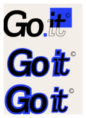
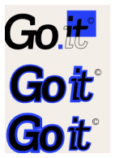

Go IT

2024

Previously known as Extreme Computers, Go IT partnered with Fontys to rebrand his IT solutions company while promoting his specialization in the dental sector.
>>> Clarifying Needs
The client provided a document outlining their needs. They wanted a fresh, modern, and professional look for their rebrand, along with a CMS-based website that fit their brand identity. This also included logos, wallpapers, and other visual assets.
>>> Research
The group came together to conduct research.
Our main question was: “How might we create a trustworthy, visually appealing, and professional brand that would attract potential customers?”
We broke this down into seven sub-questions. I focused on how to market specific services on the website, especially the dental sector, while keeping the broader range of services visible.
My research pointed to five key factors: simplifying messaging, using visuals to connect with visitors, adding social proof to build trust, making actions clear and easy, and optimizing for SEO.

>>> Field Research
We also decided to take it to field with it to ask small business the question
“How could a IT solutions company attract small businesses”
Me, Coralie and Mayca were put in a group and we interviewed small business owners. This experience gave us valuable insights into their expectations and needs when it comes to IT solutions.
The conclusion of the field research was put into a persona.

asdada

>>> Moodboards
Since we were all design students I asked the whole group to make designs for their own work. So I started making my moodboard and since we felt like we had complete freedom I wanted to take a direction of a more creative look while keeping it modern and professional, instead of fully professional to the point it would blend with the other companies. I wanted Go IT to stand out.

>>> Logo V1
For the logo I found the Brdy logo and we used it as inspiration. We liked the pixelated blue design that really matched with my mood board and I saw how Go IT could have a similar look . I showed Coralie and we both started designing the logo.
Our first design of the logo felt like we were copying the Brdy look and only changing a few things.
We decided to try keeping looking but switching it up. I kept making more iterations.
I liked the blue and black since it gave off the energy of a tech company and it looked professional. I tried many iterations. Pixelating the blue. Blue around the text. But what I made that I really liked was this blue box around the IT. to me it looked like I was selecting the It with my cursor. I really liked the simplicity of the text and the colors with the message behind it.
After feedback from Dirk about contrasting I changed the darkness of the blue to harmonize more.
 



>>> Testing V1
Nikola made a more professional look for the logo and I thought we should test the two logos to see which logo would be preferred.
Penny helped me structure the test. Having to logo in between other similar logos and asking my question.
Which was “Which 3 logos here look visually the best and trustworthy”
Testing one version with my logo and Nikolas logo.
And then asking them which of our logos looks the best for an IT company.
Nikola’s was chosen more times over mine for being more professional while mine being creative.

>>> Logo V2
The group decided that my logo and Nikolas were good enough to send to our client to see if he liked the direction we were going.
This would be our first product we would send him to start getting to know his taste. Basically to sum it up he didn't understand my logo he said it felt incomplete and sent a few logos he liked.
From this the group made another round of logos. This time sending him more to see which logo would catch his eye. You know the more the merrier.
My logos, I tried keeping making them a bit more professional. And I even tried giving more context to the logos I made so that he could see the vision. Sadly in his feedback he didn’t mention anything about my logos. But he liked one that Maxim made so we continued with that one since he liked it.
>>> Card sorting
We also did card sorting to better understand where people think the placement of some section should be. Jackie,Maxim,coralie and I conducted these user tests after school with teachers and students. We did a few closed card sortings and an open. So that we could differentiate the results between the two.
>>> Landing Page Idea
My process for my landing page. I chose the tennis page as the inspiration. I liked how the grid background matched with the outlines of the logo I made and how they used the green of a tennis ball to mark important things and as primary color. The blue in the logo would be used in the same way. My page design was sent along with the others of the group members for his feedback. Sending it I knew he might not like mine as much but the feedback was way different.

Client reaction: "Option 3 (my design) looks like some random elements on a piece of paper. I CANNOT say anything positive about that one."
>>> Finalizing The Design
We put together the elements he liked and I asked the team to come together so we could start finalizing the design and keep moving. I did this because I felt like the team kept swaying around designing and we were not talking about where the places of elements would be or if everyone understood the design. The last thing you'd want everyones pages not to be similar.
>>> Specialization Page
After doing this we all had to design the pages(home,services,specialization,about ect…) For this part we let everyone choose a page to design. I chose the specialization page which turned out great because for the library research I had to research how to market this part. So I got to use my research to make this page. I even emailed our client so that I could have more information about this service. Elements like visuals, proof of trust, straightforward information, and CTA’s that were all a part of my research I made sure were displayed.
>>> User Tests
After everyone that did design pages were finished, we quickly made it interactive so that we could do user testing to validate that user experience was how we would imagine.
We conducted 2 user tests:
1. 5 second test: where the user could scroll through the landing page for 5 seconds then would be asked questions like “what stood out the most” or “what is this website about”
2. Navigation test: we would give the user tasks to see if he could navigate smoothly through the website without confusing himself. Through this we could see how they would make their own route to get to the answer.
I was the proctor. Introducing the user to the test and asking the questions.
Doing the user test was very important. We received feedback such as, sizing down some elements, button placement and navigation work. All of this is valuable feedback to finalize the product. And to know the user experience is improved.


>>> WordPress
Our client had asked us to use a CMS like Wordpress to publish our design on the website. But we never used WordPress before, some teachers advised us to make the WordPress for him and some didn’t. It was up to us. We ended up deciding to make WordPress after all since that is what the client asked for.
Everyone had to make their own page on WordPress. At first it was tricky to use WordPress but I quickly figured out how to be able to put everything I designed on WordPress, although some things had to be changed since we didn’t have control over WordPress. Things like dropdowns and rounded corners had to stay how they were as on the WordPress design.
>>> Presentation day
On the presentation day where we had to present our final product we found out that we were going to present in the OIL with all the other students watching as well, which made me a bit nervous but I felt confident in our work and quickly got over it. The client looked very satisfied with the final product and even contacted us to use the rights to our design. Which I think means he preferred our design!
But mostly I am proud of myself. Teachers and groupmates after the presentation complimented me on my presentation skills. Which makes me happy I was able to sell our product that we worked hard for very well.

What went well:
On my part I felt like I helped with this project a lot. If it was research, design choices, speaking my mind about something I didn’t like. I’m proud of my members who also helped make the end product possible.
Could've went better:
Like our client said, we should have contacted him more. I agree it could have made the process easier. We didn’t ask for feedback on mood boards at the start. We kind a just made logos and sent him. But if we knew what his likes were we could have made entirely different.
I felt like some of the group members weren’t putting as much care to help. They would make a very simple design and call it a day. When we had to make pages for the website some of them didn’t make a page. I felt like a few members were just waiting for the working members to do the heavy work. Or they would choose an easier route to have less work. Conclusion the work wasn't split evenly. And the ones that didn’t help as much don’t get affected.